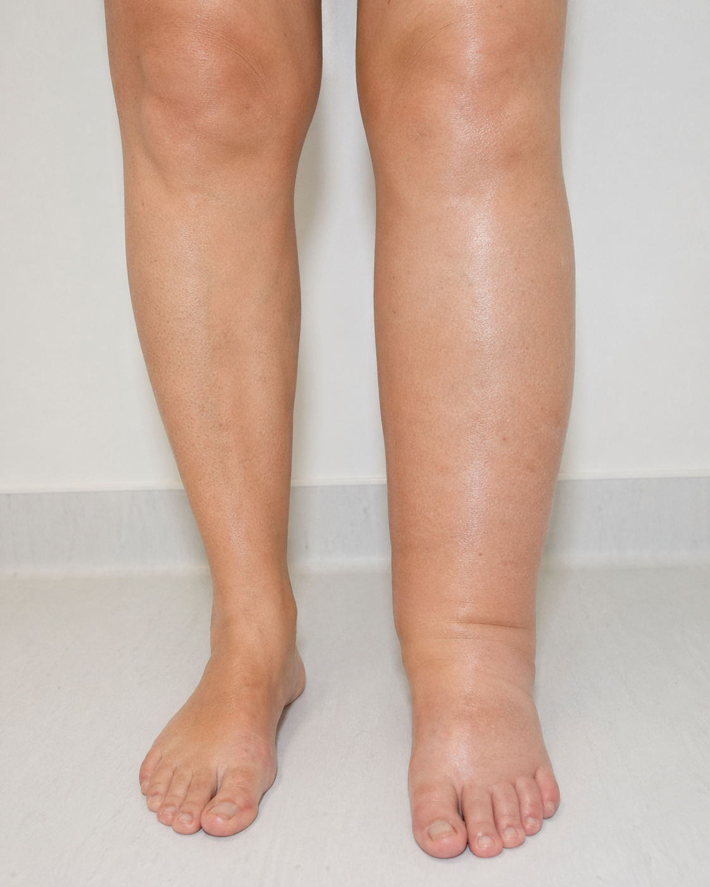
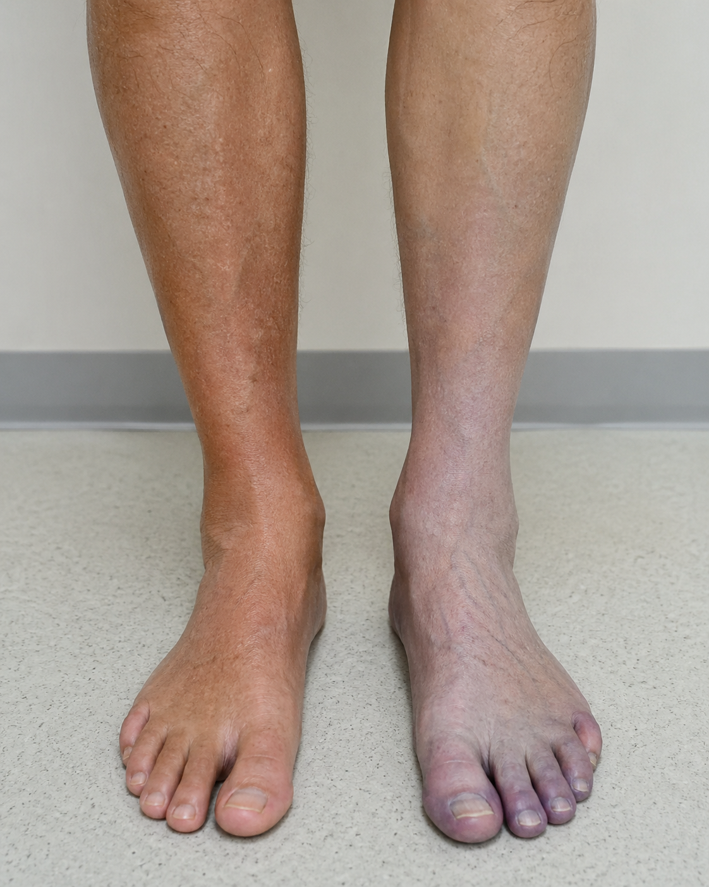
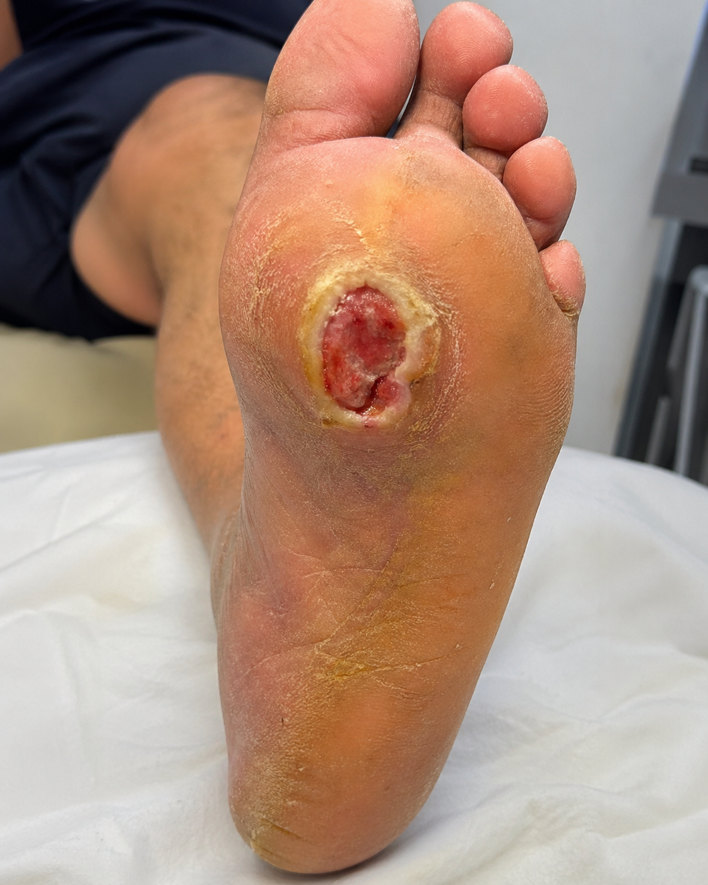

Como nomear o diagnóstico
Antes de chegar ao nome final da doença, o estudante deve compreender que o diagnóstico clínico pode ser construído em camadas. Essa organização evita conclusões precipitadas e melhora a segurança da conduta.
Nem todo diagnóstico começa pelo nome da doença.
Primeiro descrevemos a síndrome, depois localizamos o território anatômico, em seguida procuramos a causa. Quando a causa não pode ser definida, registramos o diagnóstico nosológico, isto é, o nome da doença reconhecida pela clínica e pelos exames.
Qual é o padrão clínico?
É a primeira organização do caso. Agrupa sinais e sintomas em uma síndrome clínica.
- Síndrome da perna inchada aguda.
- Síndrome da perna inchada crônica.
- Síndrome do pé frio e doloroso.
- Síndrome ulcerosa do membro inferior.
- Síndrome infecciosa do pé diabético.
Onde está o problema?
Localiza o território predominante acometido. Essa etapa direciona o exame físico e os exames complementares.
- Arterial.
- Venoso.
- Linfático.
- Neuropático.
- Cutâneo e partes moles.
- Osteoarticular.
Qual é a causa?
Define o mecanismo causal do quadro. É o diagnóstico mais completo quando é possível estabelecer a origem do problema.
- Aterosclerótica.
- Trombótica.
- Embólica.
- Infecciosa.
- Traumática.
- Inflamatória ou autoimune.
- Metabólica, como diabetes mellitus.
- Congênita ou genética.
Qual é o nome da doença?
Quando não é possível definir com segurança a etiologia, registra-se o diagnóstico nosológico. Ele nomeia a entidade clínica reconhecida.
- Doença arterial periférica.
- Trombose venosa profunda.
- Insuficiência venosa crônica.
- Linfedema.
- Pé diabético.
- Úlcera venosa.
- Úlcera arterial.
Antes de diagnosticar, descreva.
O aluno deve primeiro observar, depois organizar, depois formular hipóteses. Esta página foi construída para apoiar esse caminho.
Como estudar por esta página
- Observe a imagem clínica ou a vinheta.
- Descreva localização, cor, edema, dor, temperatura, pulsos e sensibilidade.
- Identifique se há risco de morte ou perda do membro.
- Classifique a síndrome predominante.
- Defina o território anatômico principal.
- Liste hipóteses e escolha o diagnóstico mais provável.
Como conduzir a discussão
- Mostre uma imagem por vez.
- Peça descrição objetiva antes de qualquer diagnóstico.
- Interrompa respostas precipitadas e retorne ao exame físico.
- Use o funil diagnóstico em todos os casos.
- Finalize cada caso com a decisão clínica inicial.




1. O funil diagnóstico
Use este caminho em todos os casos. Ele evita a memorização superficial e força o estudante a raciocinar com prioridade clínica.
2. Primeiro filtro, gravidade
Antes de refinar hipóteses, o estudante deve reconhecer as situações que exigem decisão imediata.
Qual diagnóstico não pode esperar?
Procure sinais de isquemia, infecção sistêmica, sangramento, síndrome compartimental ou trombose venosa maciça.
Sinais de alarme vascular
- Dor súbita e intensa.
- Pé frio, pálido ou cianótico.
- Ausência de pulso distal.
- Parestesia ou perda de força.
- Necrose, gangrena ou progressão rápida da lesão.
Sinais de alarme sistêmico
- Febre, hipotensão ou confusão mental.
- Celulite extensa ou infecção profunda.
- Ferida com secreção purulenta e toxemia.
- Dispneia associada a suspeita de TVP.
- Sangramento ativo ou hematoma expansivo.
O que muda a conduta imediatamente?
3. Síndromes clínicas do membro inferior
Cada card apresenta uma porta de entrada comum no atendimento. A revisão deve sempre responder: qual diagnóstico é mais provável e qual diagnóstico é mais perigoso?
Perna inchada aguda
- O edema é unilateral?
- Há dor na panturrilha ou empastamento?
- Houve cirurgia, imobilização, câncer ou viagem prolongada?
- Há febre, rubor difuso ou porta de entrada?
Hipóteses principais: trombose venosa profunda, celulite, erisipela, trauma muscular, rotura de cisto de Baker e linfangite.
Exame útil: ultrassom Doppler venoso quando houver suspeita de TVP.
Erro comum: tratar todo edema doloroso como infecção sem avaliar trombose.
Perna inchada crônica
- O edema piora ao final do dia?
- Melhora com elevação?
- Há varizes, hiperpigmentação ou eczema?
- O edema é duro, persistente e assimétrico?
Venoso: peso, varizes, edema vespertino, hiperpigmentação e úlcera medial.
Linfático: edema crônico, pele espessada, fibrose, sinal de Stemmer positivo e infecções recorrentes.
Sistêmico: edema bilateral associado a insuficiência cardíaca, renal, hepática ou medicamentos.
Pé frio e doloroso
- A dor começou de forma súbita?
- O membro está frio ou pálido?
- Há pulso palpável?
- Há parestesia ou perda de força?
Seis sinais clássicos: dor, palidez, ausência de pulso, parestesia, paralisia e frialdade.
Hipóteses principais: embolia arterial, trombose arterial aguda, trauma arterial e isquemia crítica avançada.
Conduta didática: reconhecer emergência e encaminhar para avaliação vascular imediata.
Dor ao caminhar
- A dor aparece sempre após distância semelhante?
- Melhora rapidamente com repouso?
- Há pulsos reduzidos?
- Há dor lombar ou melhora ao flexionar o tronco?
Claudicação vascular: dor reprodutível ao esforço, melhora com repouso, fatores de risco cardiovascular e pulsos reduzidos.
Dor neurogênica: pode melhorar ao sentar ou inclinar o tronco para frente, frequentemente associada a sintomas lombares.
Exame útil: índice tornozelo braquial e Doppler arterial.
Úlcera no tornozelo
- Está na região maleolar medial?
- É dolorosa ou pouco dolorosa?
- Tem exsudato e bordas irregulares?
- Os pulsos estão presentes?
Venosa: úlcera medial, exsudativa, bordas irregulares, edema, varizes e hiperpigmentação.
Mista: sinais venosos com dor importante, necrose seca ou pulsos reduzidos.
Erro crítico: compressão intensa sem avaliar perfusão arterial.
Úlcera plantar no diabético
- Há perda de sensibilidade?
- A lesão está em área de pressão?
- Há calosidade ou deformidade?
- Há secreção, odor, febre ou osso exposto?
Neuropática: indolor, plantar, associada a calosidade e perda de sensibilidade.
Isquêmica: dolorosa, distal, pele fria, pulsos reduzidos, necrose seca.
Infectada: rubor, calor, secreção, odor, dor nova ou sinais sistêmicos.
Não esquecer: retirar carga, avaliar perfusão e investigar osteomielite quando houver ferida profunda ou osso exposto.
Perna vermelha e quente
- Há febre?
- O rubor é difuso ou segue trajeto venoso?
- Existe cordão endurecido e doloroso?
- A dor está em articulação?
Tromboflebite superficial: cordão venoso endurecido, doloroso e hiperemiado.
Celulite ou erisipela: rubor difuso, calor, dor cutânea, febre e porta de entrada.
Confundidores: gota, artrite, trauma e TVP com sinais inflamatórios.
4. Territórios anatômicos e pistas clínicas
Depois da síndrome, o aluno deve localizar o sistema predominante. Essa etapa reduz a lista de diagnósticos e direciona os exames.
Quando pensar em artéria?
- Pé frio, pálido ou cianótico.
- Pulsos reduzidos ou ausentes.
- Dor ao caminhar ou dor em repouso.
- Úlcera distal, seca e dolorosa.
- Necrose seca em dedos.
Quando pensar em veia?
- Edema, peso e cansaço nas pernas.
- Varizes e piora ao final do dia.
- Hiperpigmentação e eczema venoso.
- Úlcera maleolar medial.
- Edema unilateral agudo com suspeita de TVP.
Quando pensar em linfa?
- Edema crônico, progressivo e persistente.
- Pele espessada ou endurecida.
- Infecções cutâneas recorrentes.
- História de cirurgia, radioterapia ou filariose.
- Sinal de Stemmer positivo.
Quando pensar em neuropatia?
- Diabetes de longa duração.
- Perda de sensibilidade protetora.
- Úlcera plantar indolor.
- Calosidade e deformidade.
- Pé de Charcot.
5. Categorias etiológicas amplas
Esta seção ajuda o aluno a entender a causa do quadro, não apenas o nome da doença.
Começou cedo?
Linfedema primário, malformações vasculares e síndromes genéticas. Pergunte sobre início na infância, adolescência e história familiar.
Houve acidente?
Lesão arterial, lesão venosa, pseudoaneurisma, fístula arteriovenosa, trombose pós trauma e síndrome compartimental.
Há febre ou secreção?
Celulite, erisipela, linfangite, pé diabético infectado, osteomielite e infecção necrosante de partes moles.
Há doença sistêmica?
Vasculites, síndrome antifosfolípide, livedo vasculopática e úlceras associadas a doenças reumatológicas.
Há aterosclerose?
Doença arterial periférica, aneurismas periféricos e degeneração venosa com varizes. Avalie idade, tabagismo e risco cardiovascular.
Há diabetes ou obesidade?
Pé diabético, neuropatia, doença arterial periférica, dislipidemia e linfedema associado à obesidade.
Há câncer?
TVP associada a câncer, síndrome de Trousseau e compressão venosa ou linfática por tumores.
Há fator precipitante?
Tabagismo, anticoncepcional, imobilização, viagem prolongada, medicamentos, pós operatório e exposição ao frio.
O estrutural foi excluído?
Edema idiopático, acrocianose, Raynaud primário e dor funcional. Só considerar após excluir causas graves.
6. Matriz didática das úlceras
Ao analisar uma úlcera, descreva localização, dor, borda, fundo, exsudato, pele ao redor, pulso e sensibilidade. A conduta depende dessa classificação.
| Tipo | Local | Dor | Pistas | Erro crítico |
|---|---|---|---|---|
| Venosa | Maleolar medial | Leve ou moderada | Exsudato, edema, varizes, bordas irregulares. | Tratar apenas a ferida. |
| Arterial | Dedos, calcâneo, proeminências | Importante | Fundo seco, pele fria, pulsos reduzidos. | Compressão sem avaliar perfusão. |
| Neuropática | Plantar, pontos de pressão | Ausente ou discreta | Calosidade, deformidade, perda sensitiva. | Não retirar carga. |
| Mista | Perna ou tornozelo | Variável | Sinais venosos com componente isquêmico. | Conduta de úlcera venosa pura. |
| Vasculítica | Múltiplos locais | Importante | Púrpura, necrose, doença sistêmica. | Atrasar investigação imunológica. |
| Pressão | Proeminências ósseas | Variável | Imobilidade, desnutrição, déficit neurológico. | Não aliviar pressão. |
7. Exames complementares que mudam a conduta
O exame deve responder a uma pergunta clínica objetiva. Evite solicitar exames sem saber qual decisão será tomada com o resultado.
Quando usar?
Suspeita de TVP, edema unilateral agudo, dor em panturrilha e avaliação de refluxo venoso em insuficiência venosa crônica.
Quando usar?
Suspeita de doença arterial periférica, claudicação, úlcera arterial, úlcera mista e antes de compressão terapêutica.
Quando usar?
Suspeita de estenose arterial, isquemia crônica, avaliação de pulsos reduzidos e planejamento de encaminhamento vascular.
Quando usar?
Suspeita de osteomielite, pé de Charcot, ferida profunda, osso exposto ou deformidade progressiva no pé diabético.
8. Dez erros a evitar pelo médico generalista
Esses erros são frequentes na atenção primária, em ambulatórios gerais e em serviços de urgência. A lista deve ser revisada antes de conduzir pacientes com dor, edema, feridas, alterações de cor ou suspeita de doença vascular nos membros inferiores.
Não palpar os pulsos
Todo paciente com dor, ferida, necrose, diabetes ou suspeita de doença vascular deve ter pulsos femoral, poplíteo, tibial posterior e pedioso avaliados, quando possível.
Comprimir úlcera sem avaliar perfusão
Compressão é fundamental na úlcera venosa, mas pode ser perigosa se houver isquemia arterial importante. Avalie pulsos e considere ITB antes de compressão terapêutica intensa.
Tratar pé diabético como ferida simples
No pé diabético, sempre avaliar três dimensões: neuropatia, isquemia e infecção. Uma lesão pequena pode esconder infecção profunda, osteomielite ou risco de amputação.
Ignorar sinais de isquemia aguda
Dor súbita, frialdade, palidez, ausência de pulso, parestesia ou perda de força exigem reconhecimento imediato. Atrasar o encaminhamento pode resultar em perda do membro.
Confundir TVP com celulite sem raciocínio diferencial
Edema unilateral agudo com dor em panturrilha, cirurgia recente, imobilização, câncer ou uso de hormônios deve levantar suspeita de trombose venosa profunda.
Prescrever antibiótico para toda úlcera crônica
Úlcera colonizada não é sinônimo de úlcera infectada. Antibiótico deve ser reservado para sinais clínicos de infecção, como celulite, secreção purulenta, dor progressiva, febre ou repercussão sistêmica.
Não retirar carga da úlcera neuropática
Curativo isolado não cicatriza úlcera plantar se a pressão continuar atuando sobre a lesão. A retirada de carga é parte essencial do tratamento.
Não investigar osteomielite quando indicada
Ferida profunda, exposição óssea, recorrência, falha de cicatrização ou infecção persistente devem levantar suspeita de osteomielite, especialmente no paciente diabético.
Tratar varizes apenas como problema estético
Varizes podem fazer parte da insuficiência venosa crônica. Edema, dor, eczema, hiperpigmentação, lipodermatoesclerose e úlcera indicam doença funcionalmente relevante.
Encaminhar tarde demais
Encaminhamento vascular deve ser precoce quando houver dor em repouso, necrose, gangrena, úlcera arterial, pé diabético complicado, TVP extensa, trauma vascular ou falha terapêutica.
9. Atividade de revisão em sala
Roteiro para discussão de imagens
- Descreva a imagem sem diagnosticar.
- Identifique a síndrome dominante.
- Procure sinais de gravidade.
- Defina o território principal.
- Liste três diagnósticos diferenciais.
- Escolha o diagnóstico mais provável.
- Indique o primeiro exame ou primeira conduta.
Use em todos os casos
- O que ameaça a vida?
- O que ameaça o membro?
- Qual achado físico é decisivo?
- Qual hipótese não posso perder?
- Qual exame muda a conduta?
- Quando encaminhar ao vascular?
O bom clínico não decora doenças.
Ele reconhece padrões, exclui urgências, organiza probabilidades e toma decisões proporcionais ao risco clínico.